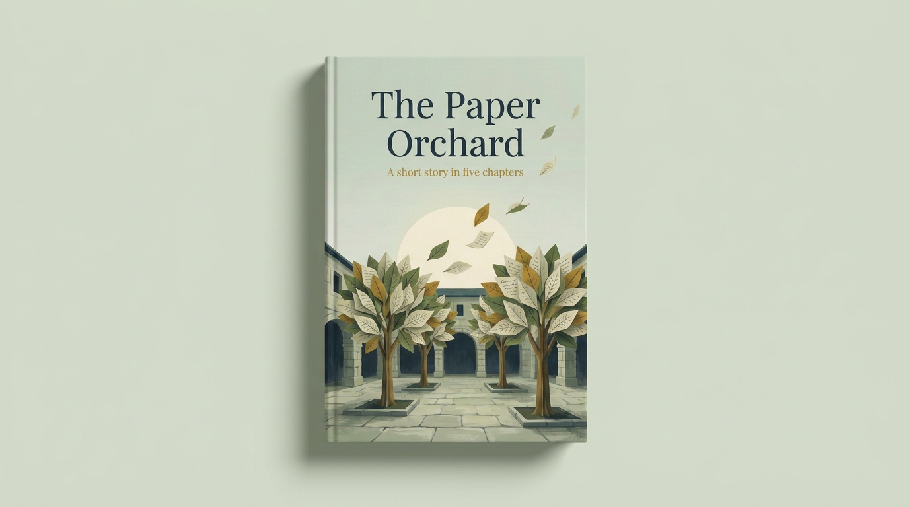

On an ordinary Tuesday, an envelope arrives for Lina with no stamp and no return address. Inside there is no letter, only a small seed folded from paper that seems to whisper when she holds it close. Remembering something her grandmother once told her, that some words are too heavy to send, so people plant them instead, Lina buries it in the empty corner of the old courtyard.
What grows is unlike any tree she has seen. Its leaves are covered in handwriting, and it does not grow on water or sunlight. It grows on attention. Every leaf she reads carefully makes room for another, until a single sentence begins to take shape across the branches.
Soon more envelopes arrive from strangers: a baker who never thanked his teacher, a boy who left without saying goodbye, a woman who cannot find the words to apologise to her sister. Lina plants every one, and the courtyard slowly becomes an orchard of unsent letters that neighbours stop to read, and that sends some of them home to finally make the call.
But when a dry season comes and Lina stops listening, the orchard begins to fade, and a storm leaves it broken. As she gathers what remains, the tallest tree lets go of the one leaf she could never reach, and with it the answer to who sent the very first seed.